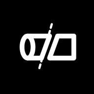
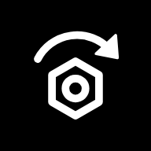
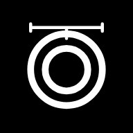
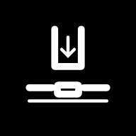
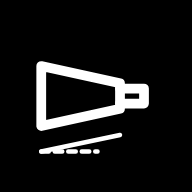
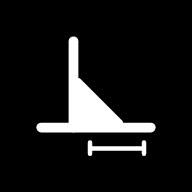
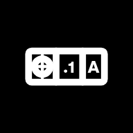

Engineers Tools
Test builds of the ten new workshop apps. Not public, not on Google Play yet.

Pipe CutOffsets · mitres · copes · wrap templates
Fastener TorqueTightening torque · preload · metric and UNC/UNF
O-Ring & Seal IDAS568 · ISO 3601 · groove sizesShaft AlignReverse rim · rim and face · shims
Shear & PunchGuillotine force · punch tonnage · clearance
Taper IDMorse · Jacobs · R8 · 7:24 · metricShop Plant LogService log · hours · next due · reminders
Weld SizeThroat · leg · weld metal · wire and rodOffcut RackLeftover plate · bar · tube · find a piece
Drawing SymbolsGD&T · ISO GPS · in plain English